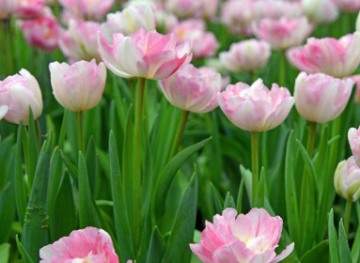
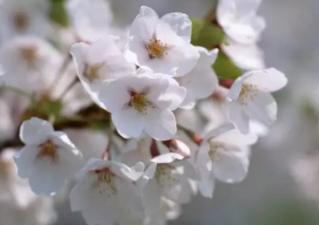

朋友圈晒花草的心情短句 微信晒花草的唯美简单说说
作者:网友整理 人气:0导读： 人生就像是一朵鲜花，花开花败终有时。但花开的时候带了了大家没得感受，所以我们做人也要做一个对社会对他人有帮助的人。
1.生命的花期只有一次:花开前夕的静默与期待，花开时分的张扬与热烈，落花时节的苍凉与无声。
2.花期虽短，但却是好看，一年的辛苦栽培也是值得了。
3.好漂亮的花花草草啊，希望这样的美景能一直伴随着我的生活。
4.这是花的宿命。纷纷扬扬的落英以一种悲壮的永别姿态离开枝头。
5.花开花落，既然是无法更改的自然规律，我们与其凄婉哀怨，不如爽性用欣赏的眼睛去看。
6.笑看花开是一种欣喜;静赏花落是一种内心静的回归。
7.小草的生命比有些人的还旺盛，还坚韧。
8.天工造物，精致小巧，玲珑剔透。
9.看见这些花花草草，感觉自己跟养孩子似的。

10.一道春夏，这花儿开的可真漂亮。
11.第一次养花，你一定要争气嗷嗷窜！
12.整个冬天里花盆都是光秃秃的，还以为第一次尝试养花就此终了了，春天一到却又冒出这么多个小生命，满眼的可爱，还有莫名的小感动……
13.花之色，粉与白交错相宜，浓与淡相得益彰。花之香，沁人心脾，使人烦闷顿消，忘却尘劳，仿佛超然于世外。
14.看的是花草，思考的却是人生。
15.以赏花的心情看人生，人生就是一次短暂的花开，一次百花的盛筵。
16.二十多岁的我，居然爱上了种花种草。
17.满园春，抬头能看花满树，侧耳能听流水声。墙外春风似千缕，来钓西园万种情。
18.紫陌红尘拂面来，无人不道看花回；玄都观里桃千树，尽是刘郎去后栽。百亩庭中半是苔，桃花净尽菜花开。种桃道士归何处，前度刘郎今又来。
19.生命的花期只有一次：花开前夕的静默与期待，花开时分的张扬与热烈，落花时节的苍凉与无声。

20.这是花的宿命。纷纷扬扬的落英以一种悲壮的永别姿态离开枝头。
21.第一次养花，不求你开花结果～只求你好好的活着～
22.花开静谧无声，但是它的芳菲会使我们伫足停留;花落悄然无息，或许它的那份飘逸使我们凝眉深思。岁月如花，笑看花开，静赏花落是人生的一种极致。
23.终于等到你，三个星期了，第一朵栀子花开了，淡淡的清香……它含苞期长，清香也会相应持久。它的寓意是：长久如一和对自己的不离不弃。
24.你想，此生，惟愿在一棵树下欣赏一朵花的翩然聆听一朵花的清音。
25.阳春三月进山，满沟都是花，满坡都飘香。开春第一花当属迎春花了，花开后春的花潮便涌进峡谷。那漫山遍野的桃花杏花
26.在十渡旅游山桃花开的比较早，紧跟着便是家桃花和杏花。山桃花喜欢凌风开放。越是高处越是开的迷人。尤其是开在悬崖上的山桃花，老远望去，如云如雪如梅，只是那云那雪不是十分的白，大概是让梅给染重了染香了。
27.在这南方的寒冬，感觉不到丝毫的冬意。昨日，受好友相邀，去莲花山赏花，被我拒绝。实在不喜人山人海的地方，更爱独自一人享受那份静谧，享受自然的美好……
28.今日大株洲阳光明媚，不出门赏菊简直是暴殄天物!赏花赏草晒阳光，享受安静惬意的午后时光!我在现场，你呢?
29.男人与女人相处的最高尚境界是纯洁。有话，可以毫无拘束地说;有事，可以亳无顾忌地帮。不可心怀不正，揣有不良图谋。赏花比折花好，赏花是一种享受，折花则是一种作孽。 |咸阳·普集...
30.恰逢花展，带着妹妹来观鱼赏花,恐高的我还陪着妹妹坐了把滑索道，结束之后发现也并没那么可怕，反而还享受到其中的乐趣，晚上吃了老板娘家的烤肉，全程一直在烤肉的我最后烤到手抖
加载全部内容
 公开恋情的超甜语录 2021最新版的公布恋情文案
公开恋情的超甜语录 2021最新版的公布恋情文案 能感动男朋友很撩人的一句话 适合跟男生的表白句子
能感动男朋友很撩人的一句话 适合跟男生的表白句子 很皮很有趣可以做快乐源泉的句子 让人心情变好的欢乐文案
很皮很有趣可以做快乐源泉的句子 让人心情变好的欢乐文案 电影你的婚礼催泪台词 2021最扎心的电影台词
电影你的婚礼催泪台词 2021最扎心的电影台词 夏天晚上的唯美心情说说 2021关于夏季夜晚的心情句子
夏天晚上的唯美心情说说 2021关于夏季夜晚的心情句子 可爱又特别撩的朋友圈小句子 朋友圈含蓄撩人的话
可爱又特别撩的朋友圈小句子 朋友圈含蓄撩人的话